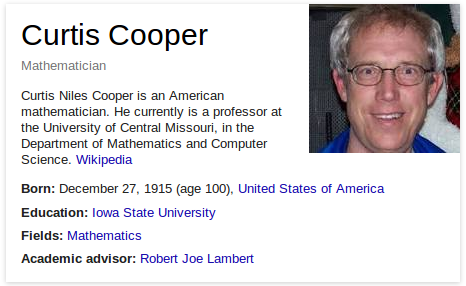

I have been interested in prime numbers since high school. I think what interests me is the fact that prime numbers have only 2 factors, 1 and itself. So it cannot be factored as the product of two integers between 1 and the number.
I know some people feel that we are wasting time finding big primes. I can also say that I know of no practical application of the fact that 274,207,281-1 is prime. But here are some things which are bi-products of the GIMPS project. First, the fact that GIMPS has found 15 Mersenne primes in 20 years shows that the distributed computing idea of taking a big problem like searching for large primes and solving it using an army of networked PCs works. Second, the algorithm used by GIMPS to test Mersenne numbers is the Lucas-Lehmer test (LL-test) with an irrational-base discrete weighted transform (IBDWT). Use of this algorithm may lead other mathematicians and computer scientists to find new algorithms which may be even faster than the LL-test and IBDWT. Third, Prime95 has been historically used to benchmark and stress test computers. The recently found flaw in the Intel Skylake CPU was discovered by Prime95 running the exponent 14,942,209. And last but not least, there is much data collected by GIMPS. This data can be used by number theorists to study properties of Mersenne numbers and the distribution of Mersenne primes. The study of this data may help in understanding properties of prime numbers.
This 49th Mersenne prime was found on one of the many University of Central Missouri lab computers we have running the GIMPS software. It is interesting to note that the computer that found this prime started checking 274,207,281-1 on August 17, 2015 and finished the test and reported it as prime to PrimeNet on September 17, 2015. However, because of a software failure, an email message notifying the GIMPS administration of this find was not sent. So the discovery went unnoticed until Aaron, performed some routine data-mining on January 7, 2016 and found the unnoticed Mersenne prime report. He immediately started checking the number on a fast computer and on January 9, finished the test and noted the number was a Mersenne prime. The group then double-, triple-, and quadruple-checked the results on different hardware and software. All the results were the same, 274,207,281-1 is prime! The announcement of the discovery was made by GIMPS on January 19, 2016.

I am 63 years old. I don't know all of the prime discovery history, both discovering Mersenne primes and other primes, but I believe there are older people than me who have found new prime numbers.
If you are a prime-seeker, I would encourage you to keep searching. There are an infinite number of primes so there are plenty of primes for all to find. GIMPS is a great project because amateur and professional mathematicians and computer scientists can participate. But there are many other projects out there to search for primes and you can even start your own. Searching takes a lot of hard work and patience, but what you learn is well worth it.
The Fibonacci Quarterly is a number-theory journal devoted to the study of integer sequences and their properties. I have been editor of The Fibonacci Quarterly for 18 years. One of the most famous integer sequences is the Fibonacci sequence. Edouard Lucas was a mathematician who studied and popularized the study of Fibonacci numbers. He also studied Mersenne primes. In 1876, Lucas proved 2127-1 is prime. His proof used primality tests he discovered and Lucas sequences that he invented. At the time, that was the largest known prime. This record stood for 75 years. And this prime is the largest prime number that was proved by hand calculations.
Since you have eliminated my favorite prime number, 274,207,281-1, I would have to say 2127-1. This prime is the one that Lucas discovered and his method of proof was brilliant and ingenious.